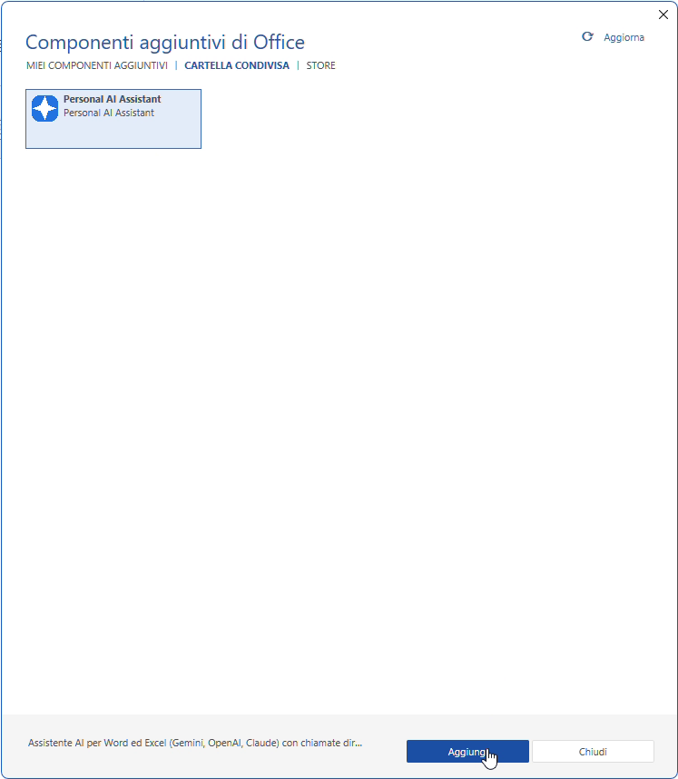
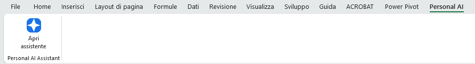

Personal AI Assistant beta 0.1.0
Assistente AI per Word, Excel, PowerPoint e Outlook per Windows, con Google Gemini, OpenAI o Anthropic Claude e la tua chiave API.
Cosa fa: in Word riscrive, corregge, riassume e traduce il testo selezionato o risponde a domande sul documento; in Excel genera formule in italiano, analizza i dati e crea grafici; in PowerPoint crea slide da una scaletta e migliora i testi; in Outlook riassume le email selezionate e prepara bozze di risposta.
Scegli il file PersonalAIAssistant-…-Setup.exe nell'ultima versione pubblicata.
Requisiti
- Windows 10 o 11 e Microsoft Office desktop per Windows (Word, Excel, PowerPoint e Outlook classico). Provato su Office LTSC 2024 a 32 bit; altre edizioni non sono ancora state verificate (vedi sotto).
- PowerPoint: le funzioni Crea slide e Migliora slide richiedono Office 2024 o Microsoft 365.
- Per Word ed Excel, una conferma da amministratore la prima volta su ogni PC (vedi sotto).
- Una chiave API di almeno un provider: Google Gemini, OpenAI o Anthropic Claude.
- Non supportati: il nuovo Outlook per Windows, Outlook sul web e Office per Mac.
Installazione
1. Avvisi di Windows (installazione non ancora firmata)
Questa è una versione beta e l'installatore non è firmato digitalmente: Windows non conosce l'editore e può mostrare avvisi. Non indica un problema nel file.
- Se il browser avvisa che il file può essere pericoloso, scegli Mantieni.
- Prima di aprirlo: clic destro sul file → Proprietà → spunta Annulla blocco → OK.
- Se compare «Windows ha protetto il PC»: Ulteriori informazioni → Esegui comunque.
Per essere sicuro che il file sia quello originale, confronta l'impronta SHA-256 con quella indicata nella pagina della versione:
Get-FileHash .\PersonalAIAssistant-0.1.0-Setup.exe -Algorithm SHA256
2. Avanti, avanti, fine
Chiudi Word, Excel e Outlook e avvia l'installazione. A metà, Windows chiede «Consentire a questa app di apportare modifiche?» per Windows PowerShell (editore verificato: Microsoft): rispondi Sì. Se il tuo utente non è amministratore, servono nome e password di un amministratore.

\\localhost\PersonalAIAssistant$, in sola lettura,
che contiene soltanto il file di configurazione del componente. Succede la prima volta su ogni PC e di nuovo solo se un aggiornamento cambia il file di configurazione. Outlook non la richiede.3. Word, Excel e PowerPoint: aggiungi il componente (una sola volta)
Apri Word (poi lo stesso in Excel e in PowerPoint) e vai su Home → Componenti aggiuntivi (Add-ins) → Altri componenti aggiuntivi, scheda CARTELLA CONDIVISA, seleziona Personal AI Assistant e premi Aggiungi.

Da quel momento trovi la scheda Personal AI nella barra in alto, a ogni avvio. Il componente non compare nell'elenco rapido del menu Add-ins: si usa dalla scheda.

4. La tua chiave API
Al primo utilizzo il pannello apre le impostazioni (ingranaggio): premi Ottieni chiave accanto al provider, crea la chiave nel suo sito, incollala e premi Salva chiavi. La più semplice da ottenere è quella di Google Gemini. In Outlook: Home → Personal AI → Impostazioni.
5. Outlook classico
Nella scheda Home trovi il gruppo Personal AI: Riassumi selezionate (seleziona più email con Ctrl+clic), Rispondi con AI e Impostazioni. Si apre sempre una bozza da rileggere: nessuna email viene inviata automaticamente.
I tuoi dati
Le chiavi restano sul tuo PC e i testi vanno direttamente al provider che scegli, senza passare da server del progetto. Dettagli nell'informativa privacy.
Disinstallazione
Impostazioni → App → App installate → Personal AI Assistant → Disinstalla. Alla fine viene chiesto se rimuovere anche la cartella condivisa del PC (rispondi No se altri utenti del PC usano Personal AI Assistant). Le chiavi del pannello di Word/Excel si cancellano dal pannello stesso (Cancella) prima di disinstallare.
Cosa è stato provato
Beta 0.1.0, Windows 11 con Office LTSC 2024 a 32 bit, utente amministratore e utente standard.
| Parte | Stato |
|---|---|
| Installazione, cartella condivisa, Aggiungi | Provati su utente standard |
| Word ed Excel (pannello, formule, analisi) | Provati in Office |
| Excel – grafici | Proposte provate; inserimento in Excel da verificare |
| PowerPoint | Proposte provate; non ancora provato dentro PowerPoint |
| Outlook | Caricamento e rete provati in Outlook; chiamate ai modelli provate fuori da Outlook |
| Office a 64 bit, Microsoft 365, 2016–2021 | Non provati |
Limiti noti della beta
- Sui PC aziendali senza diritti di amministratore, o con software che controlla le elevazioni, l'installazione di Word/Excel può richiedere l'intervento dell'IT. Outlook si installa comunque.
- I risultati dell'AI possono contenere errori: rileggili sempre. In Word si annulla con un solo Ctrl+Z.
- Formule Excel in italiano o in inglese; Excel in altre lingue riceve le formule in inglese.